소방설비산업기사(전기) (2018-09-15 기출문제)
1과목: 소방원론
1. 사염화탄소를 소화약재로 사용하지 않는 이유에 대한 설명 중 옳은 것은?
- 폭발의 위험성이 있기 때문에
- 유독가스의 발생 위험이 있기 때문에
- 전기 전도성이 있기 때문에
- 공기보다 비중이 작기 때문에
(정답률: 81%)

2. 연소범위에 대한 설명으로 틀린 것은?
- 연소범위에는 상한과 하한이 있다.
- 연소범위의 값은 공기와 혼합된 가연성 기체의 체적농도로 표시된다.
- 연소범위의 값의 압력과 무관하다.
- 연소범위는 가연성 기체의 종류에 따라 다른 값을 갖는다.
(정답률: 87%)
3. 실험군 쥐를 15분 동안 노출 시켰을 때 실험군의 절반이 사망하는 치사 농도는?
- ODP
- GWP
- NOAEL
- ALC
(정답률: 78%)
4. 다음 중에서 전기음성도가 가장 큰 원소는?
- B
- Na
- O
- CI
(정답률: 61%)
5. 프로판 가스의 공기 중 폭발범위는 약 몇 vol.%인가?
- 2.1~9.5
- 15~25.5
- 20.5~32.1
- 33.1~63.5
(정답률: 76%)
6. 실 상부에 배연기를 설치하여 연기를 옥외로 배출하고 급기는 자연적으로 하는 제연방식은?
- 제2종 기계제연방식
- 제3종 기계제연방식
- 스모트타워 제연방식
- 제1종 기계제연방식
(정답률: 57%)
7. 화재하중에 주된 영향을 주는 것은?
- 가연물의 온도
- 가연물의 색상
- 가연물의 양
- 가연물의 융점
(정답률: 82%)
8. 출화의 시기를 나타낸 것 중 옥외출화에 해당하는 것은?
- 목재사용 가옥에서는 벽, 추녀밑의 판자나 목재에 발염착화한 때
- 불연 벽체나 칸막이 및 불연 천정인 경우 실내에서는 그 뒷판에 발염착화한 때
- 보통가옥 구조시에는 천정판의 발염착화한 때
- 천청 속, 벽 속 등에서 발염착환 때
(정답률: 69%)
9. 전기화재의 발생 원인이 아닌 것은?
- 누전
- 합선
- 과전류
- 마찰
(정답률: 84%)
10. 위험물의 종류에 따른 저장방법 설명 중 틀린 것은?
- 칼륨-경우 속에 저장
- 아세트알데히드-구리 용기에 저장
- 이황화탄소-물 속에 저장
- 황린-물 속에 저장
(정답률: 71%)
11. 소화에 대한 설명 중 틀린 것은?
- 질식소화에 필요한 산소농도는 가연물과 소화약제의 종류에 따라 다르다.
- 억제소화는 자유활성기(free radical)에 의한 연쇄반응을 차단하는 물리적인 소화 방법이다.
- 액체 이산화탄소나 할론의 냉각소화 효과는 물보다 아주 작다.
- 화염을 금속망이나 소결금속 등의 미세한 구멍을 통과시켜 소화하는 화염방지기(flame arrester)는 냉각소화를 이용한 안전장치이다.
(정답률: 54%)
12. 제4류 위험물을 취급하는 위험물제조소에 설치하는 게시판의 주의사항으로 옳은 것은?
- 화기엄금
- 물기주의
- 화기주의
- 충격주의
(정답률: 86%)
13. 가연성물질 종류에 따른 연소생성가스의 연결이 틀린 것은?
- 탄화수소류-이산화탄소
- 셀룰로이드-질소산화물
- PVC-암모니아
- 레이온-아크릴로레인
(정답률: 73%)
14. 실내에 화재가 발생하였을 때 그 실내의 환경변화에 대한 설명 중 틀린 것은?
- 압력이 내려간다.
- 산소의 농도가 감소한다.
- 일산화탄소가 증가한다.
- 이산화탄소가 증가한다.
(정답률: 85%)
15. 이산화탄소 소화약제를 방출하였을 때 방호구역 내에서 산소농도가 18vol.%가 되기 위한 이산화탄소의 농도는 약 몇vol.% 인가?
- 3
- 7
- 6
- 14
(정답률: 68%)
16. 제1류 위험물 중 과산화나트륨의 화재에 가장 적합한 소화방법은?
- 다량의 물에 의한 소화
- 마른 모래에 의한 소화
- 포소화기에 의한 소화
- 분무상의 주수 소화
(정답률: 80%)
17. 고비점 유류의 화재에 적응성이 있는 소화설비는?
- 옥내소화전설비
- 옥외소화전설비
- 미분무설비
- 연결송수관설비
(정답률: 77%)
18. 분말 소화약제 원시료의 중량 50g을 12시간 건조한 후 중량을 측정하였더니 49.95g이고, 24시간 건조한 후 중량을 측정하였더니 49.90g 이었다. 수분함수율은 몇%인가?
- 0.1
- 0.15
- 0.2
- 0.25
(정답률: 48%)
19. 실내 화재 시 연기의 이동과 관련이 없는 것은?
- 건물 내ㆍ외부의 온도차
- 공기의 팽창
- 공기의 밀도차
- 공기의 모세관 현상
(정답률: 76%)
20. 제3류 위험물로 금수성 물질에 해당하는 것은?
- 탄화캴슘
- 유황
- 황린
- 이황화탄소
(정답률: 57%)
2과목: 소방전기회로
21. 평행판 콘덴서에서 판사이의 거리를 1/2로 하고 판의 면적을 2배로 하면 그 정전용량은 몇 배인가?
- 1/2
- 2
- 3
- 4
(정답률: 83%)
22. 60Hz에서 3Ω의 리액턴스를 갖는 자기 인덕턴스 값은 약 몇 mH인가?
- 8
- 10
- 12
- 14
(정답률: 46%)
23. 임피던스 16+j12Ωdp 26+j40V의 전압을 인가할 때 유효전력은 몇 W인가?
- 58.26
- 91.04
- 113.8
- 227.6
(정답률: 51%)
24. 3상 유도전동기의 동기속도와 관현 있는 사항은?
- 전동기의 용량
- 전동기의 극수
- 전원전압
- 부하전류
(정답률: 69%)
25. 변압기 결선 시 제3고조파가 발생하는 것은?
- △ - Y
- △ - △
- Y - Y
- Y - △
(정답률: 70%)
26. 다음 그림의 블록선도에서 전달함수 C/R는?
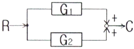
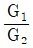
- G1+G2
- G1ㆍG2
- G1-G2
(정답률: 61%)
27. 트랜지스터의 특성에 대한 설명으로 틀린 것은?
- 소형이다.
- 수명이 길다.
- 저전압, 소전력으로 동작한다.
- 고온에 잘 견디며 온도 특성이 양호하다.
(정답률: 67%)
28. 정격 500W 전열기에 정격전압의 80%를 인가하면 전력은 몇 W인가?
- 320
- 400
- 560
- 620
(정답률: 57%)
29. 계기용 변류기의 2차측 표준전류는 일반적으로 몇 A인가?
- 1
- 2
- 3
- 5
(정답률: 70%)
30. 다음 그림과 같은 논리회로의 명칭은?
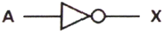
- AND
- NOR
- NOT
- NAND
(정답률: 76%)
31. RLC 병렬회로에서 인가된 전압이 E[V]이고, 회로에 흐르는 전류가 l[A]일 때 옳은 것은? (문제 오류로 가답안 발표시 1번으로 발표되었지만 확정답안 발표시 2, 3, 4번이 정답처리 되었습니다. 여기서는 가답안인 1번을 누르면 정답 처리 됩니다.)
- 유도성 회로는 l가 E보다 위상이 앞선다.
- 용량성 회로는 l가 E보다 위상이 앞선다.
- 용량성 회로는 XL＞XC인 경우이다.
- 유도성 회로는 XL＜XC인 경우이다.
(정답률: 70%)
32. 다음 그림과 같은 회로에서 다이오드양단의 전압 VD는 몇 V인가? (단, 이상적인 다이오드이다.)
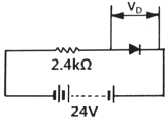
- 0
- 2.4
- 14
- 24
(정답률: 64%)
33. 온도, 유량, 압력 등의 공업프로세스의 상태를 제어량으로 하는 제어는?
- 서보기구
- 프로그램제어
- 정치제어
- 프로세스제어
(정답률: 77%)
34. PID동작에 해당되는 것은?
- 응답속도를 빨리할 수 있으나 오프셋은 제거되지 않는다.
- 사이클링을 제거할 수 있르나 오프셋이 생긴다.
- 사이클링과 오프셋이 제거되고 응답속도가 빠르며, 안정성이 있다.
- 오프셋은 제거되나 제어동작에 큰 부동작 시간이 있으면 응답이 늦어진다.
(정답률: 76%)
35. 저항 1Ω 자기인덕턴스 10H의 코일에 10V의 직류 전압을 인가하는 순간 전류 증가율은 몇 A/s인가?
- 1
- 10
- 100
- 1000
(정답률: 47%)
36. 실리콘 제어정류소자(SCR)의 성질로 틀린 것은?
- P-N-P-N의 구조로 되어 있다.
- 소용량 정류기에 적합하다.
- 특성곡선에 부저항 부분이 있다.
- 조명제어, 전동기제어 등의 스위칭 소자로 사용된다.
(정답률: 64%)
37. 다음 그림과 같은 교류회로의 역률은?
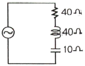
- 0.6
- 0.7
- 0.8
- 1.0
(정답률: 64%)
38. 변압기 2차측의 중성점은 몇 종 접지공사를 하여야 하는가?(관련 규정 개정전 문제로 여기서는 기존 정답인 2번을 누르면 정답 처리됩니다. 자세한 내용은 해설을 참고하세요.)
- 제1종
- 제2종
- 제3종
- 특별 제3종
(정답률: 61%)
39. 다음 그림과 같은 교류 브리지회로가 평형상태에 있으려면 L의 값은?
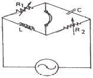
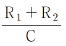
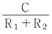
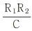
- R1R2C
(정답률: 54%)
40. 유도전동기의 종류 중 단상 유도전동기가 아닌 것은?
- 분상 기동형
- 콘덴서 기동형
- 세이딩 코일형
- 권선형 유도전동기
(정답률: 68%)
3과목: 소방관계법규
41. 화재예방, 소방시설 설치ㆍ유지 및 안전관리에 관한 법형에 따른 임시소방시설 중 비상경보장치를 설치하여야 하는 공사의 작업현장의 규모의 기준 중 다음 ()안에 알맞은 것은?
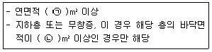
- ㉠ 400, ㉡ 150
- ㉠ 400, ㉡ 600
- ㉠ 600, ㉡ 150
- ㉠ 600, ㉡ 600
(정답률: 53%)
42. 화재예방, 소방시설 설치ㆍ유지 및 안전관리에 관한 법령에 따른 비상방송설비를 설치하여야 하는 특정소방대상물의 기준 중 틀린 것은? (단, 위험물 저장 및 처리 시설 중 가스시설, 사람이 거주하지 않는 동물 및 식물 관련 시설, 지하가 중 터널, 축사 및 지하구는 제외한다.)
- 연면적 3500m2 이상인 것
- 연면적 1000m2 미만의 기숙사
- 지하층의 층수가 3층 이상인 것
- 지하층을 제외한 층수가 11층 이상인 것
(정답률: 63%)
43. 위험물안전관리법령에 따른 소방철장, 시ㆍ도지사, 소방본부장 또는 소방서장이 한국소방산업기술원에 위탁할 수 있는 업무의 기준 중 틀린 것은?
- 시ㆍ도지사의 탱크안전성능검사 중 암반탱크에 대한 탱크안전성능 검사
- 시ㆍ도지사의 탱크안전성능검사 중 용량이 100만L 이상인 액체위험물을 저장하는 탱크에 대한 탱크안전성능검사
- 시ㆍ도지사의 완공검사에 관한 권한 중 저장용량이 30만L 이상인 옥외탱크저장소 또는 암반탱크저장소의 설치 또는 변경에 따른 완공검사
- 시ㆍ도지사의 완공검사에 관한 권한 중 지정수량 3000배 이상의 위험물을 취급하는 제조소 또는 일반취급소의 설치 또는 변경(사용 중은 제조소 또는 일반취급소의 보수 또는 부분적인 증설은 제외)에 다른 완공검사
(정답률: 56%)
44. 소방기본법에 따른 출동한 소방대의 소방장비를 파손하거나 그 효용을 해하여 화재진압ㆍ인면구조 또는 구급활동을 방해하는 행위를 한 사람에 대한 벌칙기준은?
- 5년 이하의 징역 또는 5000만원 이하의 벌금
- 5년 이하의 징역 또는 3000만원 이하의 벌금
- 3년 이하의 징역 또는 3000만원 이하의 벌금
- 3년 이하의 징역 또는 1500만원 이하의 벌금
(정답률: 61%)
45. 화재예방, 소방시설 설치ㆍ유지 및 안전관리에 괁한 법령에 따른 소방시설들의 자체점검 시 점검인력 1단위가 하루 동안 점검할 수 있는 특정소방대살물의 연면적 기준 중 다음 ()안에 알맞은 것은? (단, 점검인력 1단위에 보조인력 1명을 추가하는 경우는 제외한다.)
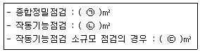
- ㉠ 10000, ㉡ 12000, ㉢ 3500
- ㉠ 13000, ㉡ 15500, ㉢ 7000
- ㉠ 12000, ㉡ 10000, ㉢ 3500
- ㉠ 15500, ㉡ 13000, ㉢ 7000
(정답률: 70%)
46. 화재예방, 소방시설 설치ㆍ유지 및 안전관리에 관한 법형에 따른 펄프공장의 작업장, 음료수 공장의 충전을 하는 작업장 등과 같이 화재 안전기준을 적용하기 어려운 특정소방대상물에 설치하지 아니할 수 있는 소방시설의 종류가 아닌 것은?
- 상수도소화용수설비
- 스프링클러설비
- 연결살수설비
- 연결송수관설비
(정답률: 53%)
47. 소방시설공사업법령에 따른 완공검사를 위한 현장확인 대상 특정소방대상물의 범위 기준 중 틀린 것은?
- 연면적 10000m2 이상이거나 11층 이상인 측정소방대상물(아파트는 제외)
- 가연성가스를 제조ㆍ저장 또는 취급하는 시설 중 지상에 노출된 가연성가스탱크의 저장용량 합계가 1000톤 이상인 시설
- 가스계(이산화탄소ㆍ할로겐화합물ㆍ청정소 화약제)소화설비(호스릴소화설비는 포함)가 설치되는 것
- 문화 및 집회시설, 종교시설, 판매시설, 노유자 시설, 수련시설, 운동시설, 숙박시설, 창고시설, 지하상가
(정답률: 61%)
48. 소방기본법에 따른 공동주택에 소방자동차 전용구역에 차를 주차하거나 전용구역의 진입을 가로막는 등의 방해행위를 한 자에게는 몇 만원 이하의 과태료를 부과하는가?
- 20만원
- 100만원
- 200만원
- 300만원
(정답률: 52%)
49. 위험물안전관리법령에 따른 지정수량의 10배 이상의 위험물을 저장 또는 취급하는 제조소등(이동탱크저장소를 제외)에 화재발생 시 이를 알릴 수 있는 경보설비의 종류가 아닌 것은?
- 확성장치(휴대용확성기 포함)
- 비상방송설비
- 자동화재속보설비
- 자동화재탐지설비
(정답률: 38%)
50. 소방기본법령에 따른 특수가연물의 기준 중 다음 ()안에 알맞은 것은?
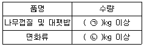
- ㉠ 200, ㉡ 400
- ㉠ 200, ㉡ 1000
- ㉠ 400, ㉡ 200
- ㉠ 400, ㉡ 1000
(정답률: 69%)
51. 소방시설공사업법에 따른 소방기술 인정 자격 수첩 또는 소방기술자 경력수첩의 기준 중 다음 ()안에 알맞은 것은? (단, 소방기술자 업무에 영향을 미치지 아니하는 범위에서 근무시간 외에 소방시설업이 아닌 다른 업종에 종사하는 경우는 제외한다.)
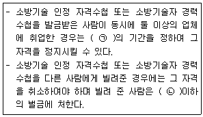
- ㉠ 6개월 이상 1년 이하, ㉡ 200만원
- ㉠ 6개월 이상 1년 이하, ㉡ 300만원
- ㉠ 6개월 이상 2년 이하, ㉡ 200만원
- ㉠ 6개월 이상 2년 이하, ㉡ 300만원
(정답률: 54%)
52. 화재예방, 소방시설 설치ㆍ유지 및 안전관리에 관한 법령에 따른 특정소방대상물 중 운동 시설의 용도로 사용하는 바닥면적의 합계가 50m2일 때 수용인원은? (단, 관람석이 없으면 복도, 계단 및 화장실이 바닥면적은 포함하지 않은 경우이다.)
- 8명
- 11명
- 17명
- 26명
(정답률: 55%)
53. 소방기본법령에 따른 화재조사에 관한 전문교육 기준 중 다음 ()안에 알맞은 것은?
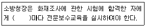
- 3개월
- 6개월
- 1년
- 2년
(정답률: 64%)
54. 화재예방, 소방시설 설치ㆍ유지 및 안전관리에 관한 법령에 따른 특정소방대상물의 연소방지 설비 설치면제 기준 중 다음 ()안에 해당하지 않는 소방시설은? (문제 오류로 가답안 발표시 2번으로 발표되었지만 확정답안 발표시 2, 3번이 정답처리 되었습니다. 여기서는 가답안인 2번을 누르면 정답 처리 됩니다.)
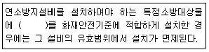
- 스프링클러설비
- 강화액소화설비
- 물분무소화설비
- 미분무소화설비
(정답률: 70%)
55. 화재예방, 소방시설 설치ㆍ유지 및 안전관리에 관한 법령에 따른 건축허가 등의 동의 대상물의 범위 기준 중 틀린 것은?
- 건축등을 하려는 학교시설:연면적 200m2 이상
- 노유자시설:연면적 200m2 이상
- 정신의료기관(입원실이 없는 정신건강의학과 의원은 제외):연면적 300m2 이상
- 장애인 의료재활시설:연면적 300m2 이상
(정답률: 53%)
56. 위험물안전관리법령에 따른 위험물의 유별 저장ㆍ취급의 공통기준 중 다음 ()안에 알맞은 것은?
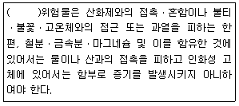
- 제1류
- 제2류
- 제3류
- 제4류
(정답률: 54%)
57. 화재예방, 소방시설 설치ㆍ유지 및 안전관리에 관한 법에 따른 소방시설관리업자가 사망한 경우 그 상속인의 소방시설관리업자의 지위를 승계한 자는 누구에게 신고하여야 하는가?
- 소방청장
- 시ㆍ도지사
- 소방본부장
- 소방서장
(정답률: 74%)
58. 소방기본법령에 따른 급수탑 및 지상에 설치하는 소화전ㆍ저수조의 경우 소방용수표지 기준 중 다음 ()안에 알맞은 것은?
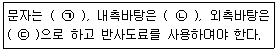
- ㉠ 검은색, ㉡ 청색, ㉢ 적색
- ㉠ 검은색, ㉡ 적색, ㉢ 청색
- ㉠ 백색, ㉡ 청색, ㉢ 적색
- ㉠ 백색, ㉡ 적색, ㉢ 청색
(정답률: 57%)
59. 위험물안전관리법령에 따른 다수의 제조소등을 설치한 자가 1인의 안전관리자를 중복하여 선임할 수 있는 경우의 기준 중 다음 ()안에 알맞은 것은? (단, 아래의 기준에 모두 적합한 5개 이하의 제조소등을 동일인이 설치한 경우이다.)
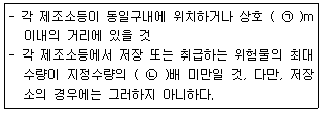
- ㉠ 100, ㉡ 3000
- ㉠ 300, ㉡ 3000
- ㉠ 100, ㉡ 1000
- ㉠ 300, ㉡ 1000
(정답률: 55%)
60. 위험물안전관리법에 따른 정기검사의 대상인 제조소등의 기준 중 다음 ()안에 알맞은 것은?
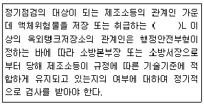
- 50만
- 100만
- 150만
- 200만
(정답률: 38%)
4과목: 소방전기시설의 구조 및 원리
61. 노유자시설 지하층에 적응성을 갖는 피난기구는?
- 피난교
- 피난용트랩
- 다수인피난장비
- 승강식 피난기
(정답률: 73%)
62. 비상전원수전설비 중 옥외에 설치하는 큐비클형의 경우 외함에 노출하여 설치할 수 없는 것은?
- 환기정치
- 전선의 인입구 및 인출구
- 퓨즈 등으로 보호한 전압계
- 불연성 재료로 덮개를 설치한 표시등
(정답률: 62%)
63. 비상콘센트설비 전원회로의 설치기준 중 틀린 것은?
- 전원으로부터 각 층의 비상콘센트에 분기되는 경우에는 분기배선용 차단기를 보호함안에 설치할 것
- 비상콘센트용의 풀박스 등은 방청도장을 한 것으로서, 두께 1.6mm 이상의 철판으로 할 것
- 비상콘센트설비의 전원회로는 단상교류 220V인 것으로서, 그 공급용량은 1.5kVA 이상인 것으로 할 것
- 콘센트마다 배선용 차단기(KS C 8321)를 설치하여야 하며, 충전부가 노출되도록 할 것
(정답률: 76%)
64. 피난기구 용어의 정의 중 다음 ()안에 알맞은 것은?
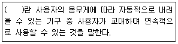
- 다수인피난장비
- 승강식 피난기
- 완강기
- 간이완강기
(정답률: 72%)
65. 자동화재탐지설비 배선의 기준 중 감지기 회로의 전로저항은 몇 Ω 이하가 되도록 하여야 하는가?
- 30
- 50
- 70
- 90
(정답률: 77%)
66. 자동화재탐지설비의 경계구역 설정기준 중 지하구의 경우 하나의 경계구역의 길이는 몇 m 이하로 하여야 하는가? (단, 감지기의 형식승인 시 감지거리, 감지면적 등에 대한 성능을 별도로 인정받은 경우는 제외한다.)
- 1500
- 1000
- 700
- 600
(정답률: 57%)
67. 비상방송설비 부속회로의 전로와 대지 사이 및 배선 상호간의 절연저항은 1경계구역마다 직류 250V의 절연저항 측정기를 사용하여 측정한 절연저항이 몇 MΩ 이상이 되도록 하여야 하는가?
- 20
- 10
- 5
- 0.1
(정답률: 70%)
68. 비상경보설비를 설치하여야 할 특정소방 대상물의 기준 중 다음 ()안에 알맞은 것은? (단, 지하구, 모래ㆍ석재 등 불연재료 창고 및 위험물 저장ㆍ처리 시설 중 가스시설은 제외한다.)
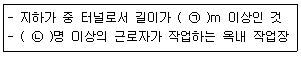
- ㉠ 500, ㉡ 50
- ㉠ 500, ㉡ 60
- ㉠ 600, ㉡ 50
- ㉠ 600, ㉡ 60
(정답률: 62%)
69. 누전경보기 부품의 구조 및 기능기준 중 다음 ()안에 알맞은 것은?
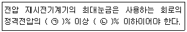
- ㉠ 110, ㉡ 125
- ㉠ 120, ㉡ 140
- ㉠ 130, ㉡ 150
- ㉠ 140, ㉡ 200
(정답률: 57%)
70. 비상콘센트설비를 설치하여야 하는 특정소방대상물의 기준 중 다음 ()안에 알맞은 것은?
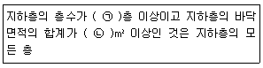
- ㉠ 3, ㉡ 1000
- ㉠ 3, ㉡ 500
- ㉠ 5, ㉡ 1000
- ㉠ 5, ㉡ 500
(정답률: 62%)
71. 단독경보형감지기를 설치하여야 하는 특징 소방대상물의 기준 중 틀린 것은?
- 연면적 400m2 미만의 유치원
- 연면적 600m2 미만의 기숙사
- 연면적 600m2 미만의 숙박시설
- 교육연구시설 또는 수련시설 내에 있는 합숙소 또는 기숙사로서 연면적 2000m2미만인 것
(정답률: 55%)
72. 복도통로유도등의 설치기준 중 다음 ()안에 알맞은 것은?
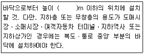
- 0.5
- 1
- 1.2
- 1.5
(정답률: 63%)
73. 무선통신보조설비의 설치제외 기준 중 다음 ()안에 알맞은 것은?
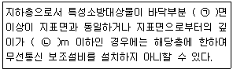
- ㉠ 1. ㉡ 1
- ㉠ 2. ㉡ 1
- ㉠ 1. ㉡ 2
- ㉠ 2. ㉡ 2
(정답률: 76%)
74. 비상벨설비 또는 자동식사이렌 설비의 설치기준 중 틀린 것은?
- 발신기의 위치표시등은 함의 상부에 설치하되, 그 불빛은 부착면으로부터 10° 이상의 범위 안에서 부착지점으로부터 15m 이내의 어느곳에서도 쉽게 식별할 수 있는 적색등으로 하여야 한다.
- 발신기는 특정소방대상물의 층마다 설치하되, 해당 측정소방대상물의 각 부분으로부터 하나의 발신기까지의 수평거리가 25m 이하가 되도록 할 것. 다만, 복도 또는 별도로 구획된 실로서 보행거리가 40m 이상일 경우에는 추가로 설치하여야 한다.
- 음향장치는 정격전압의 80% 전압에서 음향을 발휘할 수 있도록 하여야 한다.
- 음향중심의 음량은 부착된 음향장치의 중심으로부터 1m 떨어진 위치에서 90dB 이상이 되는 것으로 하여야 한다.
(정답률: 73%)
75. 누전경보기를 설치하여야 하는 특정소방대상물의 설치기준 중 다음 ()안에 알맞은 것은? (단, 위험물 저장 및 처리 시설 중 가스시설, 지하가 중 터널 또는 지하구의 경우는 제외한다.)
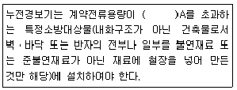
- 15
- 20
- 60
- 100
(정답률: 40%)
76. 무선통신보조설비 무선기기 접속단자의 설치 기준 중 다음 ()안에 알맞은 것은?
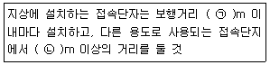
- ㉠ 150, ㉡ 10
- ㉠ 150, ㉡ 5
- ㉠ 300, ㉡ 10
- ㉠ 300, ㉡ 5
(정답률: 34%)
77. 정온식감지선형감지기의 설치기준 중 옳은 것은?
- 단자부와 마감 고정금구와의 설치간격은 5cm 이내로 설치할 것
- 감지선형 감지기의 굴곡반경은 10cm 이상으로 할 것
- 감지기와 감지구역의 각 부분과의 수평거리가 내화구조의 경우 1종 3m 이하로 할 것
- 지하구나 창고의 천장 등에 지지물이 적당하지 않는 장소에서는 보조선을 설치하고 그 보조선에 설치할 것
(정답률: 53%)
78. 비상방송설비 전원의 설치기준 중 다음 ()안에 알맞은 것은?
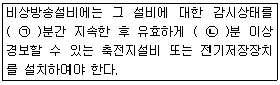
- ㉠ 60, ㉡ 10
- ㉠ 60, ㉡ 5
- ㉠ 30, ㉡ 10
- ㉠ 30, ㉡ 30
(정답률: 79%)
79. 자동화재속보설비 속보기의 기능기준 중 다음 ()안에 알맞은 것은?
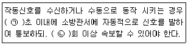
- ㉠ 10, ㉡ 3
- ㉠ 10, ㉡ 5
- ㉠ 20, ㉡ 3
- ㉠ 20, ㉡ 5
(정답률: 58%)
80. 비상조명등의 설치제외 기준 중 다음 ()안에 알맞은 것은?
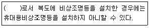
- 숙박시설
- 아파트
- 근린생활시설
- 다중이용업소
(정답률: 58%)